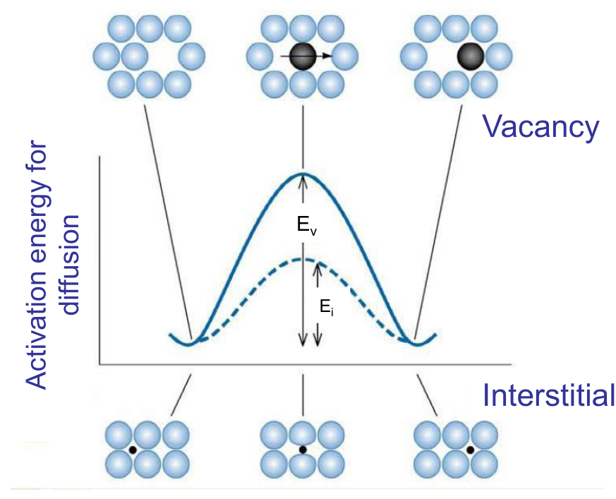
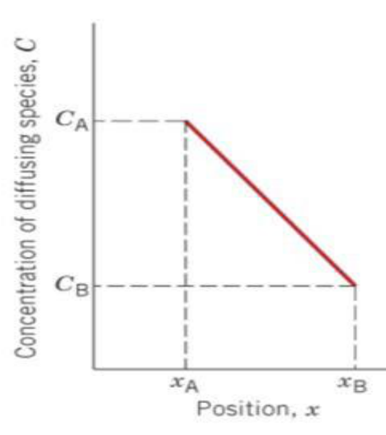
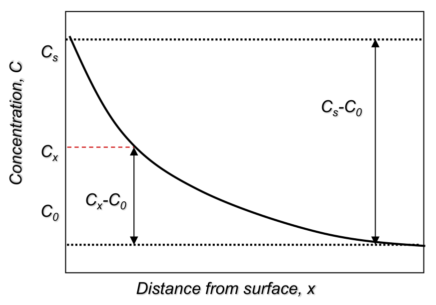
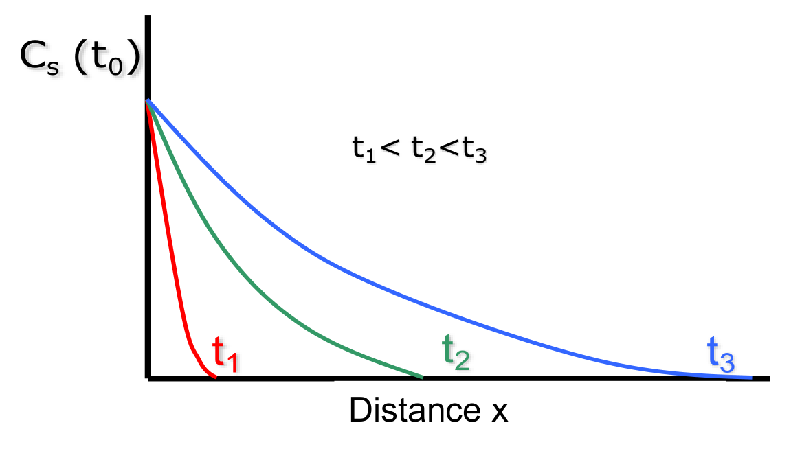
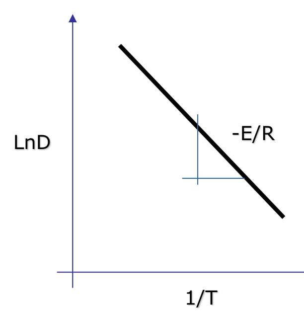

Diffusion in Solids and Mass Transport
How atoms move through a solid, the vacancy and interstitial mechanisms, Fick's first and second laws, the factors that control the diffusivity, and the industrial uses of diffusion.
Central idea: atoms in a solid are not fixed: thanks to their thermal vibrations some of them jump from site to site. When the composition is not uniform, these jumps produce a net movement of matter, called diffusion, that tends to even out the composition.
The topic covers what diffusion is and how atoms move (vacancy and interstitial mechanisms), how to quantify it with Fick's two laws, what makes it faster or slower, and where it is used in industry.
§ 1 What diffusion is [Session 5 Slide 2]
Diffusion is the set of mechanisms by which matter is transported through a material. Atoms move fastest in gases, more slowly in liquids, and most slowly in solids.
Diffusion in solids is the movement of atoms within a solid:
- the thermal vibrations of the atoms let some of them move;
- so diffusion is a phenomenon that needs thermal activation.
The driving force is a composition gradient: atoms move from regions of high to low concentration, and diffusion tends to make the composition equal everywhere. For example, when titanium and silicon are held in contact at high temperature, atoms diffuse across the interface and layers of new compounds (titanium silicides) grow between them.
§ 2 What diffusion needs [Session 5 Slides 4-6]
For an atom to diffuse, two things are needed:
- An empty site to jump into: a vacancy or an interstitial site. This defines the two mechanisms of diffusion.
- Energy to make the jump: the activation energy.
Diffusion is also behind solid-state reactions, such as the growth of a compound layer between two materials.
2.1 Activation energy [Session 5 Slides 5-6]
To jump, an atom has to squeeze past its neighbours, and that needs energy. The activation energy $E_a$ (in J/mol or cal/mol) is the energy required to move an atom into a new vacancy or interstitial position. Diffusion happens only when the thermal energy is larger than $E_a$.
$E_a$ depends both on the atom that diffuses and on the material it diffuses through.
The diffusivity follows an Arrhenius equation:
| Symbol | Meaning |
|---|---|
| $D$ | diffusivity (diffusion coefficient) |
| $D_0$ | a constant, independent of temperature and different for each material |
| $E_a$ | activation energy (J/mol or cal/mol) |
| $R$ | molar gas constant (J/(mol·K) or cal/(mol·K)) |
| $T$ | temperature in kelvin |
Because $T$ is in the exponent, a higher temperature gives many more atoms with enough energy to jump: T ↑ → diffusion ↑.
2.2 Types of diffusion [Session 5 Slide 6]
- Vacancy diffusion (or substitutional diffusion)
- 1a. self-diffusion
- 1b. interdiffusion
- Interstitial diffusion
§ 3 Vacancy (substitutional) diffusion [Session 5 Slides 7-12]
In vacancy diffusion an atom jumps into a neighbouring empty lattice site. Each jump moves the atom one way and the vacancy the other way, so it can also be seen as the movement of vacancies.
Vacancies are equilibrium defects, so they are always present. The rate of vacancy diffusion depends strongly on how many vacancies there are, and that number grows with temperature. Raising the temperature therefore helps twice: there are more vacancies, and more atoms have a thermal energy larger than the activation energy.

3.1 Self-diffusion [Session 5 Slides 7-9]
Self-diffusion is the exchange of positions between atoms of the same metal. If an atom next to a vacancy has enough activation energy, it jumps into the vacancy.
Its activation energy has two parts, because a vacancy must first exist and then move:
The activation energy for self-diffusion increases with the melting temperature of the metal: a higher $T_m$ means stronger bonds ($T_m\uparrow \Rightarrow E_{bond}\uparrow$), and stronger bonds make it harder to form and move vacancies ($T_m\uparrow \Rightarrow E_a\uparrow$). A plot of $E_a$ against $T_m$ for lead, aluminium, silver, gold, copper and iron shows the activation energy rising with the melting temperature.
| Metal | Melting temperature (°C) | Structure | $E_a$ (kJ/mol) | $E_a$ (kcal/mol) |
|---|---|---|---|---|
| Zinc | 419 | HCP | 91.6 | 21.9 |
| Aluminium | 660 | FCC | 165 | 39.5 |
| Copper | 1083 | FCC | 196 | 46.9 |
| Nickel | 1452 | FCC | 293 | 70.1 |
| α-Iron | 1530 | BCC | 240 | 57.5 |
| Molybdenum | 2600 | BCC | 460 | 110 |
3.2 Interdiffusion [Session 5 Slides 10-12]
Interdiffusion is the movement of atoms through a lattice made of different atoms, as in substitutional solid solutions. It follows the same Hume-Rothery rules as solid solutions. It is what allows alloys and intermetallics to form, and it is important in diffusion welding.
Example: a copper-nickel diffusion couple. A block of Cu and a block of Ni are put in contact and held at high temperature. Before the treatment the composition changes abruptly at the interface (100 % Ni on one side, 0 % on the other). During the treatment Cu atoms move into the Ni and Ni atoms into the Cu, and the composition profile becomes smoother and smoother; after a long enough time the couple becomes a single uniform Cu-Ni alloy.
Cu and Ni can mix completely because they meet all the Hume-Rothery rules:
- Crystal structure: both are FCC.
- Atomic radius: $R_{Cu} = 128$ pm and $R_{Ni} = 124$ pm, a difference well below 15 %.
- Electronegativity: Cu ≈ 1.90 and Ni ≈ 1.91, practically equal.
- Valence: both +2.
§ 4 Interstitial diffusion [Session 5 Slide 13]
In interstitial diffusion an atom in an interstitial site jumps to a neighbouring interstitial site, without permanently displacing any atom of the host lattice. Only atoms that are small compared with the host can do this; in metals, C, H, O and N.
Compared with vacancy diffusion, interstitial diffusion:
- needs less energy: the barrier $E_i$ is lower than $E_v$;
- is faster;
- has more sites available, because there are many more interstitial sites than vacancies.
§ 5 How much is diffusing: the flux [Session 5 Slide 15]
The rate of diffusion is measured by the diffusion flux J: the amount of atoms (in moles or mass) that crosses a plane of unit area per unit time.
Fick's laws describe the flux in two situations:
- steady state: $J$ does not change with time → Fick's first law;
- non-steady state: $J$ changes with time → Fick's second law.
§ 6 Steady-state diffusion: Fick's first law [Session 5 Slides 16-17]
In steady state the concentration at each point of the material does not change with time, so the flux does not change either:
It happens when two regions of different, fixed composition are kept on either side of a material, so atoms keep flowing through it at a constant rate. The flux is proportional to the concentration gradient:
| Symbol | Meaning | Units |
|---|---|---|
| $J$ | atoms (or mass) per unit area and time along $x$ | at/(m²·s) or kg/(m²·s) |
| $\Delta C/\Delta x$ | concentration gradient in the $x$ direction | (at/m³)/m or (kg/m³)/m |
| $D$ | diffusivity or diffusion coefficient | m²/s |
The minus sign says that atoms move down the gradient, from high to low concentration. The driving force is again the composition gradient.
Across a layer between positions $x_1$ and $x_2$, with concentrations $C_{ext}$ and $C_{int}$ on the two sides, the gradient is
The figure of the same slide labels the two faces $x_A$ and $x_B$ and their concentrations $C_A$ and $C_B$: $C_A = C_{ext}$ at $x_A = x_1$ and $C_B = C_{int}$ at $x_B = x_2$.
The flux at a given temperature is constant only if the compositions on both sides are kept constant, that is, if the concentration gradient is constant.

§ 7 Non-steady-state diffusion: Fick's second law [Session 5 Slides 18-21]
7.1 When the concentration changes with time [Session 5 Slides 18-19]
In most real cases diffusion is non-steady (transient): the concentration at each point changes with time. Such a process does not last forever: as the composition evens out, diffusion eventually comes to an end.
The change of concentration with time is given by
If $D$ does not depend on the composition (the diffusing atoms do not interact with each other), $D$ comes out of the derivative and Fick's second law becomes
In words: the rate at which the composition changes equals the diffusivity times the rate at which the composition gradient changes. To solve it, boundary conditions must be set to match the experiment.
7.2 Gas diffusing into a semi-infinite solid [Session 5 Slides 20-21]
A common case is a gas with a constant surface concentration diffusing into a solid so thick that the far side is never reached (a semi-infinite solid). Examples: carbon diffusing into steel, or a metal absorbing atmospheric gases.
With $x$ the distance from the surface into the solid, the boundary conditions are:
- at $t = 0$: $C = C_0$ everywhere ($0 \le x \le \infty$);
- for $t > 0$: $C = C_s$ at the surface ($x = 0$, constant surface concentration);
- for $t > 0$: $C = C_0$ at $x = \infty$.
The solution of Fick's second law with these conditions is
where $C_x$ is the concentration at depth $x$ after time $t$ and erf is the Gaussian error function.
How to read it:
- at the surface ($x = 0$): erf(0) = 0, so $C_x = C_s$;
- deep inside ($x \to \infty$): erf → 1, so $C_x = C_0$;
- the profile depends on $x$ and $t$ only through $x/(2\sqrt{Dt})$: a given concentration reaches a depth that grows with $\sqrt{Dt}$.


Values of the error function:
| z | erf(z) | z | erf(z) | z | erf(z) |
|---|---|---|---|---|---|
| 0.00 | 0.0000 | 0.30 | 0.3286 | 0.85 | 0.7707 |
| 0.01 | 0.0113 | 0.35 | 0.3794 | 0.90 | 0.7969 |
| 0.02 | 0.0226 | 0.40 | 0.4284 | 0.95 | 0.8209 |
| 0.03 | 0.0338 | 0.45 | 0.4755 | 1.00 | 0.8427 |
| 0.04 | 0.0451 | 0.50 | 0.5205 | 1.10 | 0.8802 |
| 0.05 | 0.0564 | 0.55 | 0.5633 | 1.20 | 0.9103 |
| 0.10 | 0.1125 | 0.60 | 0.6039 | 1.30 | 0.9340 |
| 0.15 | 0.1680 | 0.65 | 0.6420 | 1.40 | 0.9523 |
| 0.20 | 0.2227 | 0.70 | 0.6778 | 1.50 | 0.9661 |
| 0.25 | 0.2763 | 0.75 | 0.7112 | 1.60 | 0.9763 |
| 0.80 | 0.7421 | 1.70 | 0.9838 | ||
| 1.80 | 0.9891 | ||||
| 1.90 | 0.9928 | ||||
| 2.00 | 0.9953 |
§ 8 Factors that influence the diffusivity [Session 5 Slides 23-26]
The diffusivity $D$ depends on both the diffusing atoms and the host material (the matrix). For a given pair (solute + solvent) at a given temperature it is a constant.
| Solute | Solvent | Structure of the solvent | D at 500 °C (m²/s) | D at 1000 °C (m²/s) |
|---|---|---|---|---|
| Carbon | Iron | FCC | 5×10⁻¹⁵ * | 3×10⁻¹¹ |
| Carbon | Iron | BCC | 10⁻¹² | 2×10⁻⁹ * |
| Iron | Iron | FCC | 2×10⁻²³ * | 2×10⁻¹⁶ |
| Iron | Iron | BCC | 10⁻²⁰ | 3×10⁻¹⁴ * |
| Nickel | Iron | FCC | 10⁻²³ | 2×10⁻¹⁶ * |
| Manganese | Iron | FCC | 3×10⁻²⁴ * | 10⁻¹⁶ |
| Zinc | Copper | 4×10⁻¹⁸ | 5×10⁻¹³ | |
| Copper | Aluminium | 4×10⁻¹⁴ | – | |
| Copper | Copper | 10⁻¹⁸ | 2×10⁻¹³ | |
| Silver | Silver (crystal) | 10⁻¹⁷ | – | |
| Silver | Silver (grain boundary) | 10⁻¹¹ | – | |
| Carbon | Titanium | HCP | 3×10⁻¹⁶ | 2×10⁻¹¹ * |
\* metastable phases
The table shows the five factors below.
a) The diffusion mechanism: size of the atom [Session 5 Slide 24]
Small atoms diffuse interstitially and much faster. At 1000 °C in FCC iron (γ-Fe):
- carbon diffuses interstitially: $D = 3\times10^{-11}$ m²/s;
- iron diffuses by vacancies: $D = 2\times10^{-16}$ m²/s,
more than 100 000 times slower.
b) The crystal structure of the host [Session 5 Slide 24]
BCC is less densely packed than FCC (lower packing factor) and its atoms are further apart, so atoms move through it more easily.
c) Imperfections and defects [Session 5 Slide 25]
Open structures, with more room between atoms, give a higher $D$. Diffusion is fastest along surfaces, slower along grain boundaries and slowest through the volume of the crystal:
(The table shows it for silver: $10^{-11}$ m²/s along grain boundaries against $10^{-17}$ m²/s through the crystal at 500 °C.)
d) The concentration of the diffusing species [Session 5 Slide 25]
Changing the concentration of solute atoms changes $D$.
e) Temperature [Session 5 Slide 26]
When the temperature rises, the atoms vibrate with larger amplitude, so the probability of a jump increases and so does $D$. Experimentally the dependence is of Arrhenius type:
| Symbol | Meaning |
|---|---|
| $D$ | diffusivity (m²/s) |
| $D_0$ | proportionality coefficient (frequency factor) |
| $E_D$ | activation energy needed for the diffusive movement of 1 mol of atoms |
| $R$ | gas constant |
| $T$ | temperature (K) |
Taking natural logarithms turns it into a straight line:
A plot of $\ln D$ against $1/T$ is therefore a straight line with slope $-E_D/R$: the steeper the line, the larger the activation energy.

§ 9 Summary: what makes diffusion fast or slow [Session 5 Slide 27]
The diffusion rate is the speed at which a species moves through a material, and it depends on both the species and the material.
| Diffusion is faster in… | Diffusion is slower in… |
|---|---|
| open crystal structures | compact crystal structures |
| lower-density materials | higher-density materials |
| structures with many defects | structures with few defects |
| neutral diffusing species | charged diffusing species |
| materials with a low $T_m$ | materials with a high $T_m$ |
| higher temperatures | lower temperatures |
| small species | large species |
§ 10 Industrial applications [Session 5 Slides 29-34]
Diffusion is used, among others, in: carburizing (cementation) of gears with CH₄–H₂ gas, sintering, the transport of gases through polymer films, the fabrication of integrated circuits (diffusion of impurities into silicon wafers), nitriding (Si₃N₄), and diffusion soldering and bonding.
10.1 Carburizing (case hardening) [Session 5 Slide 30]
Carburizing is an interstitial diffusion process: carbon atoms diffuse into the surface of a steel part.
- The carbon atoms block the movement of dislocations and distort the lattice, which makes plastic deformation more difficult: the surface becomes harder.
- The excess of carbon at the surface leaves it under compressive residual stresses.
It is typical for gears and shafts, which need a tough core (to resist fracture) and a hard surface (to resist wear). The part is machined while it is still "soft", and hardened afterwards by gas carburizing.
10.2 Nitriding [Session 5 Slide 31]
Nitriding (here, of Si powder to form Si₃N₄) is another surface treatment by diffusion. Like carburizing and induction hardening, it gives a hard surface whose hardness decreases with depth into the part.
10.3 Sintering [Session 5 Slide 32]
Sintering (used for example for ceramics) is a thermally activated mass-transport process that bonds the particles of a powder together chemically and reduces the porosity.
10.4 Diffusion bonding [Session 5 Slide 33]
Parts are joined by diffusion between their surfaces. It is used for aircraft cowlings and fan blades, such as the wide-chord fan of the Rolls-Royce Trent 500, which protects the engine against damage from foreign objects.
10.5 Gases through polymer films [Session 5 Slide 34]
Polymers are used as barrier materials in food packaging, where the diffusion of gases through the film has to be kept low:
- water vapour makes fresh food dry out, dried foods clump together and fried snacks lose their crispness; a good barrier lets through less than 10 g/(m²·day), measured at 23 °C and 90 % relative humidity;
- oxygen and other gases let bakery goods and cheese grow mould, discolour fresh meat (sliced meat turns grey under shop lighting), allow bacterial growth, and make fatty products go rancid, especially in light. The best atmosphere depends on the food.
§ 11 Worked example: purifying hydrogen with a palladium plate [Session 5 Slide 35]
Problem. Hydrogen is purified by letting it diffuse through a palladium plate of cross-section 0.2 m². Find the thickness of the plate needed to purify $1.733\times10^{-3}$ kg/h of hydrogen, if the hydrogen concentration is 1.5 kg/m³ on the high-pressure side and 0.3 kg/m³ on the low-pressure side. The diffusion coefficient of hydrogen in Pd is $1\times10^{-8}$ m²/s.
Why Fick's first law. Both concentrations are kept constant, so the gradient across the plate and the flux are constant: steady state.
Step 1: the flux. The flux is the mass that crosses the plate per unit area and time:
Converting hours to seconds (1 h = 3600 s):
Step 2: the thickness. From $J = -D\,\dfrac{C_b - C_a}{\Delta x}$, with $C_a = 1.5$ kg/m³ (high-pressure side) and $C_b = 0.3$ kg/m³ (low-pressure side):
The plate must be 5 mm thick.
Check of units: $\dfrac{(\text{m}^2/\text{s})\cdot(\text{kg}/\text{m}^3)}{\text{kg}/(\text{m}^2\,\text{s})} = \dfrac{\text{kg}/(\text{m}\,\text{s})}{\text{kg}/(\text{m}^2\,\text{s})} = \text{m}$.
Interpretation: a thinner plate would let more hydrogen through for the same concentrations (the flux grows as $1/\Delta x$); the 5 mm is the thickness that gives exactly the required production.